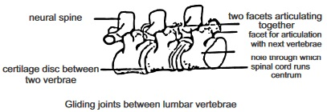
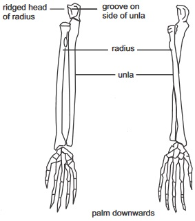
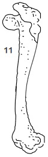

The body of most living things are embedded or formed upon a frame work which provides rigidity and support for the body. This frame work is called skeleton in animals.
There are different types of skeleton:
Exo-skeleton
Endoskeleton and
Hydrostatic skeleton
Skeletal materials: In animals the main skeletal mateials are chitin, cartilage and bone
Skeletal material
Composition
Examplesin animal
Chitin
(An exoskeleton material)
A carbohydrate strengthened by deposits of proteins and mineral salts
Found in arthropods
Catilage
(endoskeleton material)
Living cells, carbohydrate and potein
Found in mammals Hyaline
cartilage at the nose trachea and
bronchi; Fibro cartilage at the in
tervertebral disc Elastic cartilage
found in thc external car and cpiglottis
Found as a main skeletal frame
work in vertebrates.
Bone
Bone cells (osteocytes)
protein fiber (collagen) and minerals
Found as a main skeletal frame work in vertebrates.
Mammalian skeleton
The mammalian skeleton is based on the basic plan of a vertebrate skeleton which are: The a main central axis
called axial skeleton (Which is made up of skull, vertebral column, breastbone and ribs) and the articulated
(joined) parts to the central axial skeleton called appendicular skeleton. This is made up of the pelvic girdle,
pectoral girdle, the hind and fire limbs.
fig7.1a Frontal view
fig7.1b Side view
Features: The bones are fused together to form brain box cranium, capsules for the ear, nose and eyes and the jaws
(upper and lower jaws)
fig7.2a The Human Skeleton
fig7.2b Vetebral Column
FEATURES OF A TYPICAL VERTEBRA
Neural Canal which provides a passage for the spinalcord
Neural spine which projects upwards and dorsal
The Centrum: A solid cord of bone which carries the central carnal (neural carnal)
Transverse processes projecting from the sides of each vertebra
Facets which are smooth surfaces at the front and back which fits into the adjacent vertebra
Fig7.3:
A
B
C
D
E
F
G
H
I
J
Joints and Muscles
A joint is a meeting point of bones. At the joint, bones are joined together by means of flexible ligaments. Joints can
be broadly grouped into two categories: The immovable joints e.g. suture joints at the skull and movable joints.
MOVABLE JOINTS
Type of Joint
Hinge jointthere is freedom of movement in one plane only e.g at knee and elbow joints
Diagram of Joint
fig7.4a:
Type of Joint
Ball and socket joint
The end of one bone is round while the other is hollow in form of a shallow cup. The joint allows free movement in any plane e.g shoulder joint and hip joint (Pelvic joint).
Diagram of Joint
fig7.4b:
Type of Joint
Gliding joint
The joint allows the sliding of bonesover one and anotherit can be found at the wrist and ankle
Diagram of Joint
fig7.4c: Gliding joints between lumbar vertebrae

Type of Joint
Pivot Joint
Pivot joint can be found In the body at the point between the first cervical vertebra the atlas and the second which is the axisThe axis with a small peg like projection called odontoid process fits into the atlas. This allows a degree of rotational movement.There is also a pivot joint at the elbow where the radius bone twist against the ulna
Diagram of Joint
fig7.4d: palm downwards

Muscles
Muscle facilitate movement in skeleton of vertebrates. Muscles are attached to bones by means of tendons a tough whitish
cord or fibrous tissue. Muscles are classified into two: voluntary muscles (which are controlled by the will) and involuntary
muscles.
fig7.5a:
fig7.5b:
Supporting Tissue in Plants
Supporting tissues in plants keep them in their upright firm positions and also enable their leaves to be at best
position to receive solar energy for photosynthesis. Such tissues can be found in the internal structures of plants. They are
discussed with diagram illustrations in the table that follows. Turgid parenchyma, collenchymas, Sclerenchyma and xylem
(wood) make up various supporting tissues found in plants. In roots, the main supporting tissues are : the xylem and turgid
parenchyma
In stems, main supporting tissues are: The collenchymas: for support to be achieved a plant must posses the attributes or
qualities of hardness, rigidity, resilience and flexibility through the mechanism of a rigid and slightly elastic cell wall,
turgid parenchyma and the arrangement of supporting tissues.
Roots (herbaceous roots)
Internal Structures
Outer cylinder
Piliferous layer
Cortex and
Endodermis
Inner cylinder or stele
pericycle
Vascular tissues
(xylem and phloem)
pith
Dicotyledons
Transverse section
fig7.6a:
Stems Diagramatic illustration
Monocotyledons
Transverse section
fig7.6b:
Internal Structures
Outer cylinder
Epidermis
(Cortex which consist of
collenchyma and
parenchyma cells)
The endodermis
Inner cylinder or stele
Pericycle (composed of
sclerenchyma cells)
The vascular tissues
Pith and medullary rays
Dicotyledons
Transverse section
fig7.6c
Monocotyledons
Transverse section
fig7.6d:
General Questions
1. An endoskeleton is made up of chitin, which contains
,
and
materials.
2. Aprawn has an exoskeleton but an earthworm and a man has
and
respectively.
3. The main mineral salts contained in bones are
and
4. The protruded part of the nose is made up of a cartilage called
5. The process of hardening of cartilage tissues into bones through the addition of minerals is called
6. In the cervical vertebra, the blood vessels of the neck pass through a pair of openings called
7. Arabbit has twelve thoracic vertebrate and caudal vertebrate that is
in number.
fig7.8a:
8. What is the function of the part labeled 5 in the diagram above
For articulation with other bones
Provides passages to the spinal cord
Provide passage for the blood vessel of the neck
9. What part of the body of humans can the vertebral bone above be found
fig7.8b:
10
Observe the diagram above carefully
11. What is the function of the part labeled 3
Articulates with the ribs
Provides oppenning for blood vessel
Absorbing shock
12. How many of this bone can be found in man
13. Bones attach to each other at the joints by means of
While muscles are attached to bones by means of
14. The last two ribs in man, which are not attached to the sternum, are called
15. On the outer edge of the pelvis in a pelvic girdle is a deep cavity called
into which the head of the femur fits to form the hip joint.
16. Scapula and clavicle are found at the
girdle.
17. Examine the diagram below carefully
fig7.8c: LATERA VIEW OF A THORACIC VERTEBRAE
Write down the three bones that make up each half in order
18. State the name of the liquid which serves as a lubricant at joints
19. The knee joint is a hinge joint but the shoulder joint is a
joint.
20. The cardiac muscle is an involuntary muscle but the skeletal muscles are
muscles.
21. Suture joints can be found at the
it is an example of an
joint.
22. The two main supporting tissues in roots of a herbaceous plant are
and
found in the cortex.
23. Write down the four types of cells that make up the xylem tissue
24. Write down the feature which is present in the vascular bundle of dicotyledonous stems but absent in
monocotyledonous stems
25. In woody stems the main supporting tissue is the
Expression Exercise on Skeletal System and supporting tissues
1. (a) Write four functions of the skeleton in mammals
Teacher's attention required
(b) Make a well labeled diagram of the side view of the skull showing the suture joints, parietal bones, frontal
bones, occipital bone, upper and lower jaws, temporal bones.
(Draw in your practical notebook)
(c ) What kind of joint is the suture joint?
2.(a) Write down two things or two ways which the properties of a cartilage differs from those of
bones
Teacher's attention required
(b) Write down the three types of muscles in mammals and one example of the part of the body each muscle type can be
found
Teacher's attention required
Type of muscle
Part of the body
1
2
3
Practical Activities
Activity 1.Examining the complete skeleton of a mammal
Materials required:
Rat or rabbit skeleton
Hand lens
Procedure:
First, carefully observe the skeleton shown in fig. 7.10
then examine the rabbit or rat skeleton carefully, compare the parts and structural features with the parts
shown in the diagram with label
Take particular note of the vertebral column, the skull and the appendicular skeleton try to produce similar drawing
by only looking at the real skeleton of the rat or rabbit.
(Draw in your practical notebook)
Count how many small bones that are contained in each of the vertebral skeleton and
write them down in the table below.
Parts of the vertebral column
Number of bones
Cervical vertebrate
Thoracic vertebrate
Lumber vertebrate
Caudal vertebrate
Examine each of the bones of the cervical vertebrae and identify the atlas and axis vertebra.
State one observable difference between the two bones
(v) Examine the caudal vertebra (tail) closely. How many bones are observable on your close examination
Compare your observation with that of man
Activity 2.
Examining the thoracic vertebrate and the rib cage
Materials required
Rat or rabbit skeleton
Ribs of a rat or rabbit
Thoracic vertebrae of a rat or rabbit
Sternum of a rat or rabbit
fig7.9:
Method / procedure
(i) Examine and study carefully, the entire rib on the skeleton.
(ii) Identify the following
True ribs (which articulate directly with the sternum through a cartilage)
Floating ribs which do not articulate with the sternum.
False ribs which articulate indirectly with the sternum through a true rib cartilage
The points where the rib articulate with the thoracic vertebra.
fig7.10: shown in the diagram below
(f) Draw the diagram above (from your own observation) in your practical notebook.
Questions
1. Write down how many of the following that is found in a rat of rabbit (Depending on which one you used for your
observation)
Pairs of true ribs
Pairs of false ribs
Floating rips
2. Write down the functions of the rib cage
3. Write down the name of the organ which lies within the rib
Activity 3. Examining Girdle and Limbs
Materials required
Rat or rabbit skeleton
Pectoral girdle of a rat or rabbit
Forelimb bones of rat or rabbit
Hind limb bones of rat or rabbit
Method
Study each of the materials provided carefully especially how each of the bones provided appear in the skeleton.
Locate the rounded head of the humerus and find out where it forms a joint with the scapula
Count the wrist bones (carpals), metacarpals and digit bones
From your objections identify the various types of movement allowable by the joint in the bones
Note the attachments of the innominate bone to the vertebra
Locate the socket (acetabulum) on the innominate bone of the pelvic girdle
Count the ankle bones (tarsals) do so also to the metatarsal and the digit bones (phalanges)
Questions
1. Write down from your observation the joints that are
hinge joints and the ones that are
.
gliding and those that are.
Ball and socket joints
2. State how the scapula is indirectly connected to the vertebral column
3. From your observations write down the number of the following:
Carpals
Metacarpals
Phalanges
Tarsal
Metatarsals
Test of Practical
fig7.11a: Lumber Vertebra
fig7.11b: Lumber Vertebra
Teacher's attention required
Identify the specimen represented in the above diagrams Aand B according to their views.
Label the diagram
Write down four characteristic feature of the vertebra shown
fig7.11c:
fig7.11d:
fig7.11e:
(a) Label the parts that were written in numbers
3. Diagram of the transverse section of a dicotyledonous and monocotyledonous
stems.
Teacher's attention required
fig7.11f:
Transverse section of internal structure
of a dicotyledonous stem
fig7.11g:
Transverse section of internal structure
of a monocotyledonous stem
Compare both diagram and identify each of them writing down two structural
differences between
them
In which of them can cambium be found and what purpose does cambium
serve there
Identify and label the parts that are the major supporting tissues in plants
4. The diagrams below show various parts of a mammalian skeleton. (a) With the help of the
diagrams, carefully identify each bone by name.
Teacher's attention required
1
2
3
4
5
6
7
8
9
10

11
Write down which of the bones that belong to the vertebral column?
Also write down the ones that belong to the appendicular skeleton